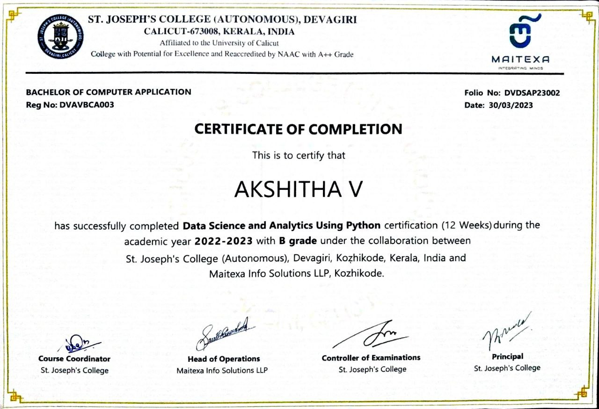
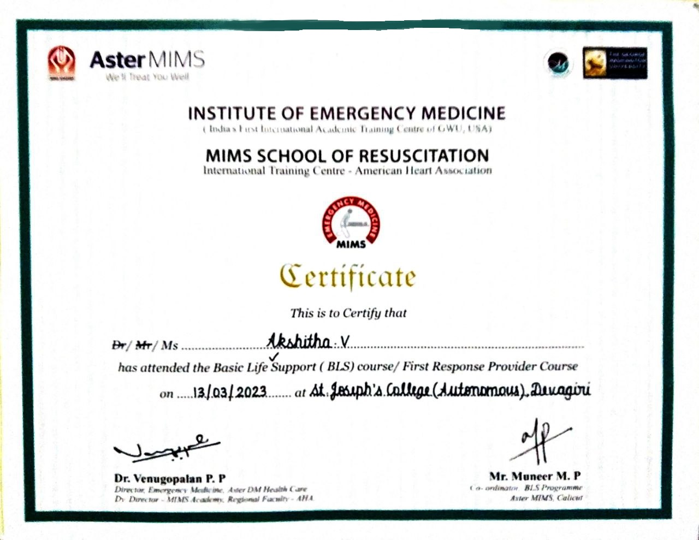

My Certificates
"Certified Ethical Hacking (CEH) certification demonstrates my expertise in identifying and addressing cybersecurity vulnerabilities, making me a valuable asset in safeguarding organizations against cyber threats. This certification is crucial for ensuring the security and integrity of digital systems, making it an essential qualification in today's technology-driven world."

I hold a Data Science and Analytics using Python certificate, reflecting my expertise in harnessing the power of Python to extract valuable insights from data. This certification underscores my ability to leverage data-driven decision-making, a critical skill in today's data-centric business landscape, to drive informed strategies and solutions.

Certified in Basic Life Support (BLS), demonstrating proficiency in vital life-saving techniques including CPR and AED operation, enhancing readiness to respond to emergencies. Encompasses crucial skills for providing immediate assistance in critical situations.